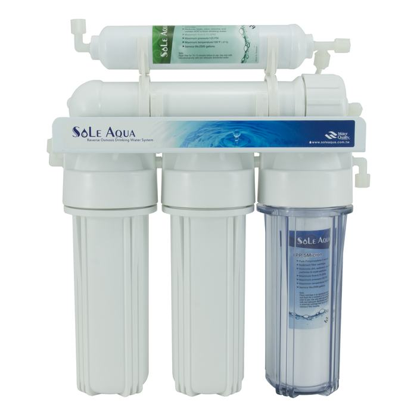
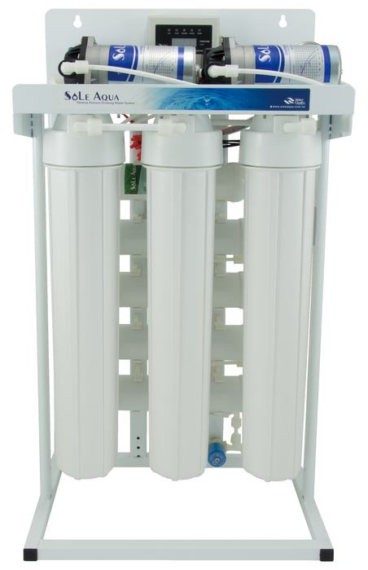
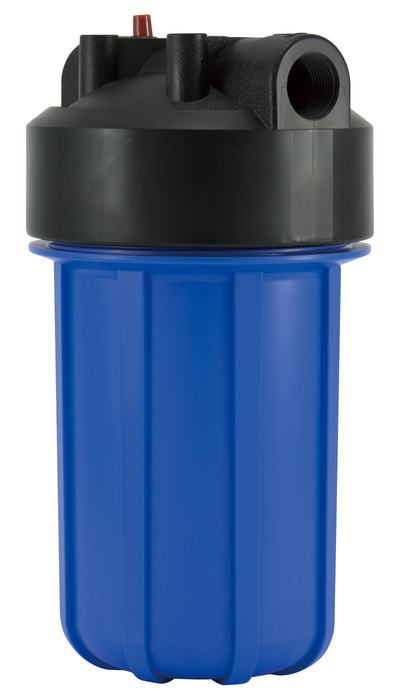
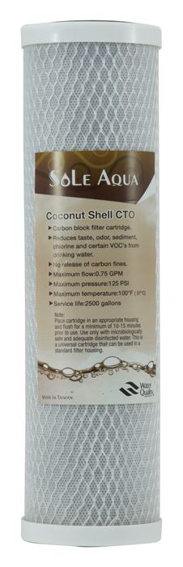
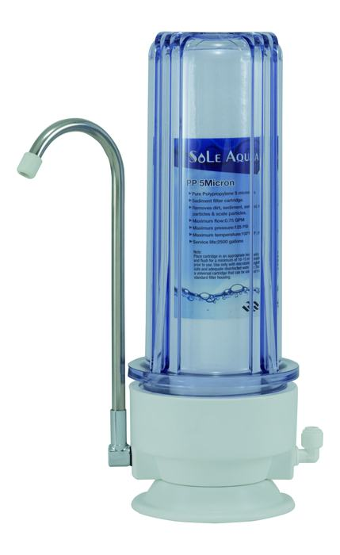
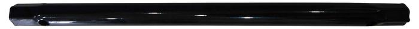

Residential
Residential RO systems and filtration components for household water applications.
WATER PURIFICATION
RO systems, filter housings and filtration components for residential, commercial and professional water applications.
OEM / ODM available · Product customization supported

PRODUCTS
Explore our water purification systems, filter housings, cartridges and related components.
Reverse osmosis systems and direct-flow RO products.
Explore category →
Commercial and professional RO system products.
Explore category →
BB, FA, RB and membrane housing products.
Explore category →
PP, CTO, GAC, UDF, T33, pleated and RO membrane products.
Explore category →
Water filtration systems and multi-stage filtration products.
Explore category →
Water faucets and related components for purification systems.
Explore category →APPLICATIONS
Product categories covering residential, commercial and filtration applications.
Residential RO systems and filtration components for household water applications.
Commercial RO systems and filtration products for professional applications.
Filter housings, cartridges and components for a range of filtration systems.
Water purification components for food service and drinking water applications.
Filtration solutions supporting hotels, hospitality and professional water use.
ABOUT CIAN HAN
CIAN HAN Co., Ltd. develops and supplies water purification systems, filter housings and filtration components.
We support product inquiries, sourcing requirements and OEM / ODM cooperation.
Talk with our team →OEM / ODM
Share your application, specifications or product idea with us. We can discuss product configuration and cooperation opportunities.
Start a Conversation →CONTACT
Product inquiries, quotation requests and OEM / ODM projects are welcome.